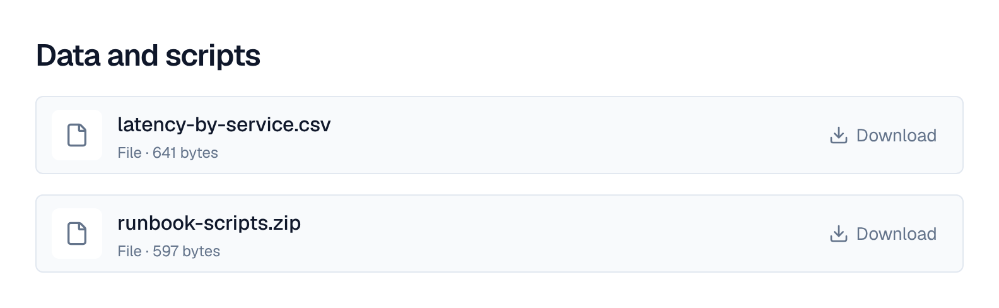
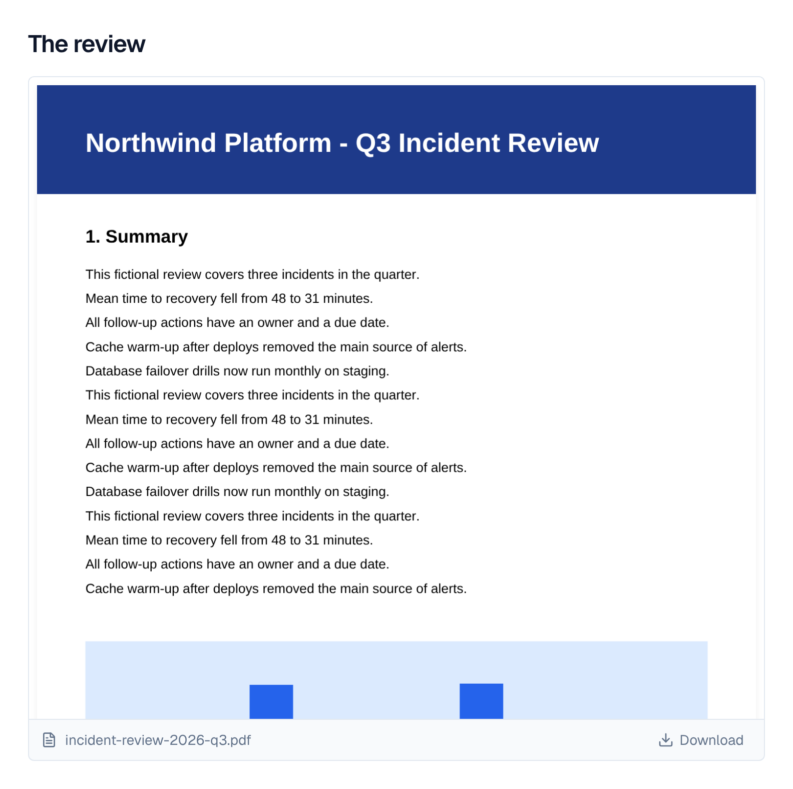
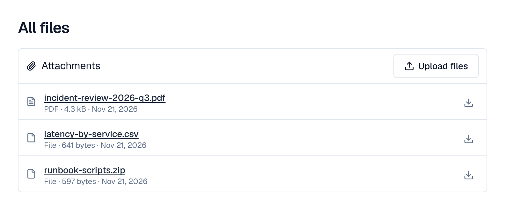
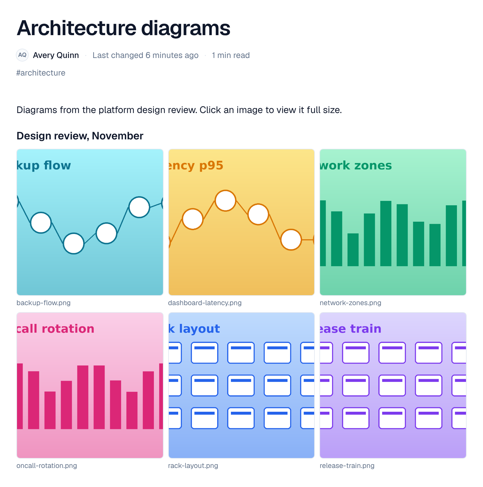
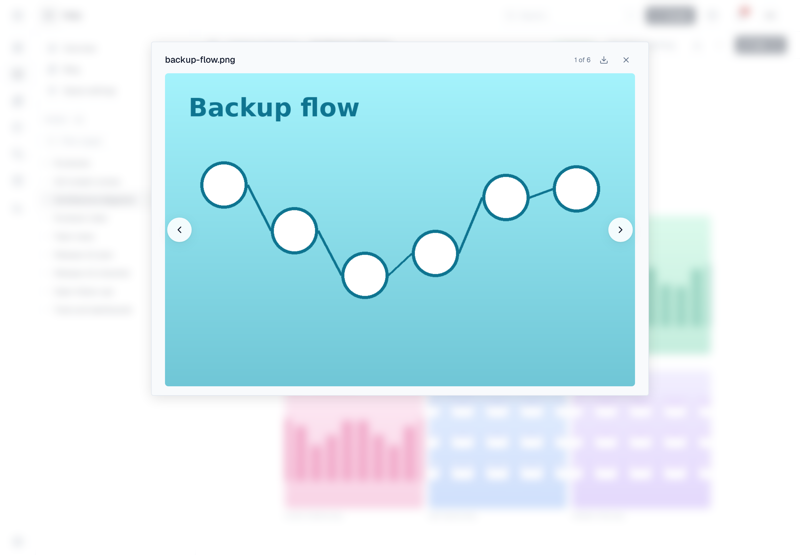
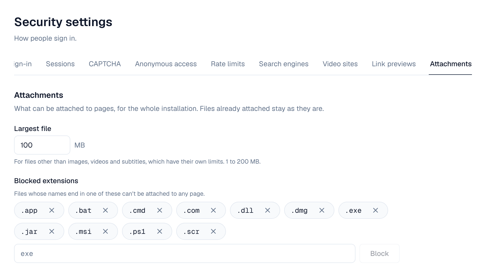

1. Overview
Besides images and videos, a page can hold any file: PDFs, Word, Excel and PowerPoint documents, archives, drawings. Three blocks show a page's files to its readers:
| Block | Shows | Insert with |
|---|---|---|
| File | One file as a card with its name, kind and size, with Preview and Download; a PDF or an image can also be shown in the page itself | /file or Insert file, or drop the file onto the page |
| Attachments list | Every file attached to the page, with an Upload files button for people who edit it | /attachments or Insert attachments list |
| Gallery | The page's images as a grid of tiles that open full size | /gallery or Insert gallery |
The blocks show the files of the page they are on. Readers see a file only once the page shows it to them: see Who sees which files.
2. File
Choose /file (or Insert file in the toolbar's Insert menu) and pick one of Files of this page, find one by name, or Upload a file. Dropping or pasting a file that isn't an image onto the page uploads it and puts a File block where you dropped it.

- Display: Card (the default) shows the file's name, kind (Image, Video, PDF or File) and size. Shown in the page, for PDFs and images, draws the file itself in the page, with a Height of 200 to 1,200 pixels (600 by default).
- Preview opens images, videos and PDFs full size over the page; Esc or Close goes back. Other files, such as Word or ZIP files, only download.
- Download saves the file under its name. Files other than images, videos and PDFs always download, never open in the browser.
- When a file is renamed, the card shows its new name. When a file is deleted from the page, the card says File removed, with the name it had.
A PDF shown in the page is drawn page by page as you scroll to it, up to 50 pages; after that it says how many more pages there are and offers the download. The PDF's links, forms and scripts don't run. A PDF that can't be drawn says so and offers the download instead.

3. Attachments list
The Attachments list lists the page's files, newest first, with each file's kind, size and date and a Download link (and Preview for images, videos and PDFs). The first 100 show at once; Show more shows the rest.

| Setting | What it does |
|---|---|
| File types | Only images, videos, PDFs or other files, or any mix. None ticked lists every kind. |
| File name filter | Only files whose names match, with * for any characters and ? for one, and commas between several: *.pdf, *.docx. |
| Order | Newest first, Oldest first, Name or Size. |
| Show an upload button to editors | On by default. People who may edit the page get Upload files; what they upload there is listed for readers at once, without publishing the page again. |
Templates can hold an attachments list too: a page made from the template lists its own files.
4. Gallery
A Gallery shows images as square tiles. Select one to see it full size: the arrows (or the arrow keys, and swiping on a phone) go to the previous and next image, and Esc closes it.


| Setting | What it does |
|---|---|
| Images | Every image of the page (new images join it by themselves), or Images I choose, up to 60, in an order you set with Move up and Move down. |
| Title | Shown above the gallery (optional). |
| Columns | 2 to 6 (4 by default). Phones show two. |
| Order | For every image of the page: Name (the default), Newest first, Oldest first or Size. |
| Show file names | On by default: each tile shows its image's name. |
A page holds up to 10 galleries. Galleries show the images as they were uploaded, so a gallery of many large photos takes a while on a slow connection: the tiles further down load as you scroll to them.
5. Who sees which files
- People who may edit a page see all of its files, in the editor and in the blocks.
- Readers see a file that a published version of the page shows (in a File block or a gallery you chose the images of, or as an image or video) and every file uploaded through an attachments list's Upload files.
- A file uploaded in the editor and not yet published reaches readers when the page is published.
- Inside a page included in another (Include page), an attachments list and a gallery of every image say that the files are on the included page; File blocks and galleries of chosen images still show.
6. Versions of a file
Upload a newer version of a file and it replaces the old one everywhere: every File block, list, gallery, image and link that shows the file shows the new version, and its address stays the same. Published versions of the page keep the file they were published with, so readers see the new version once you publish the page.
- Open the versions — Choose Versions on a File block, or the clock button on a row of an attachments list.
- Upload — Choose Upload new version and pick the file. It must be the same kind of file as the old one (an image for an image, a PDF for a PDF); anything else is refused, and can be attached as a new file instead.
- Check — The new version is listed as Current. Each version has its own download.
When you upload a file through an attachments list's Upload files and the page already has a file of the same name, the Wiki asks: New version makes it a new version of that file, Keep both attaches it as a second file.

- Readers see Versions once a file has two published versions, and only the versions a published version of the page showed.
- An older version is kept while a published version of the page shows it; others are deleted when the next version is uploaded. Every version counts toward the page's 500 files and 1 GB.
- Comparing two versions of the page in History shows each side's images as they were then.
- Restoring an old version of the page shows the latest version of each file. A copy of a page copies only the latest version of each file.
7. Rename and delete
A file keeps the name it was uploaded with. People who may edit the page can rename or delete one through the API; a renamed file stays in every block that shows it, and a deleted one shows as File removed in the blocks and versions that showed it.
8. Downloads and imports
- In a page downloaded as Word or PDF, a File block is a line with the file's name, kind and size, linked to the file; an attachments list lists the files you may see (up to 100); a gallery prints its images one under another (up to 24). PDFs shown in the page are printed as their line.
- Confluence's file macros (View file, PDF, Office viewers, Multimedia), Attachments and Gallery become these blocks in an import, and every attachment is imported, except blocked or too-large files.
9. Limits
| What | Limit |
|---|---|
| Images, videos, subtitles | 20 MB, 200 MB and 512 KB, as before (see Images and videos) |
| PDFs and other files | 100 MB by default; your administrator sets it between 1 and 200 MB |
| Blocked file names | Files ending in .exe, .msi, .bat, .cmd, .com, .scr, .ps1, .dll, .jar, .app or .dmg can't be attached, unless your administrator changes the list |
| Per page | 500 files and 1 GB together |
| Galleries | 10 a page; 60 chosen images each |
A refused file says why: Files ending in .exe can't be attached here, or that the file is too large.
10. For administrators
Settings → Security → Attachments (settings:write) decides which files pages take, for the whole installation:

| Setting | Default | Effect |
|---|---|---|
| Largest file | 100 MB | For PDFs and other files, from 1 to 200 MB. Images, videos and subtitles keep their own limits. |
| Blocked extensions | exe, msi, bat, cmd, com, scr, ps1, dll, jar, app, dmg | Files whose names end in one of these can't be attached to any page. Type an extension (without the dot) and choose Block; up to 100. |
Save with the Security page's Save bar. Files already attached stay as they are. Imports follow the same settings: a blocked or too-large file is left out and counted in the import report.
The Wiki doesn't scan files for viruses. Files other than images, videos and PDFs are always downloaded, never opened in the browser, but keep the blocked list for files that run when opened.
Changing the settings raises attachment_settings.update; renaming a file raises page.attachment.update; a new version of a file raises page.attachment.version; uploading and deleting any file raise page.attachment.create and page.attachment.delete. Policies can refuse each of them; see Events. The changes are in the audit log.
11. API
| Method | Path | Who | What |
|---|---|---|---|
| GET | /api/spaces/{key}/pages/{id}/attachments | Read the page | The page's files you may see: everything for its editors, the listed files and those its latest published version shows for readers. kind (image, video, pdf, file, comma-separated), q (part of the name), sort (new, old, name, size), cursor, limit |
| POST | /api/spaces/{key}/pages/{id}/attachments | Edit the page | Upload a file (multipart, field file). any=true takes PDFs and other files; listed=true puts it in the attachments list. Both go before file |
| GET | /api/spaces/{key}/pages/{id}/attachments/{attachment} | Read the page | The file; ?download=1 saves it instead of opening it. ?version=N asks for a version of it, ?pageVersion=N for the one a published version of the page showed |
| PATCH | /api/spaces/{key}/pages/{id}/attachments/{attachment} | Edit the page | Rename: {filename}, 1 to 255 characters |
| GET | /api/spaces/{key}/pages/{id}/attachments/{attachment}/versions | Read the page | The file's versions you may see, newest first (number, filename, size, createdAt, latest) |
| POST | /api/spaces/{key}/pages/{id}/attachments/{attachment}/versions | Edit the page | Upload a new version (multipart, field file), of the same kind; refused with version_kind_mismatch otherwise |
| DELETE | /api/spaces/{key}/pages/{id}/attachments/{attachment} | Edit the page | Delete the file from the page and the versions that showed it |
| GET | /api/wiki/attachment-settings | Signed in | blockedExtensions and maxFileMb |
| PUT | /api/wiki/attachment-settings | settings:write | Change them |